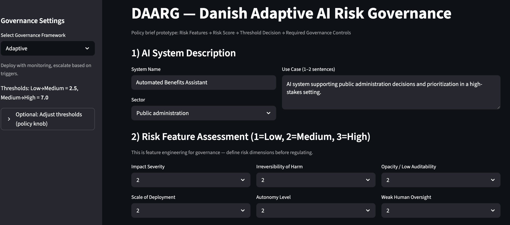

AI Governance • Streamlit • Risk Assessment
DAARG — Danish Adaptive AI Risk Governance
A data-driven risk governance application developed to support structured AI risk assessment and governance decision-making. The project combines analytical thinking, business context, AI governance principles, and practical implementation in an interactive app.